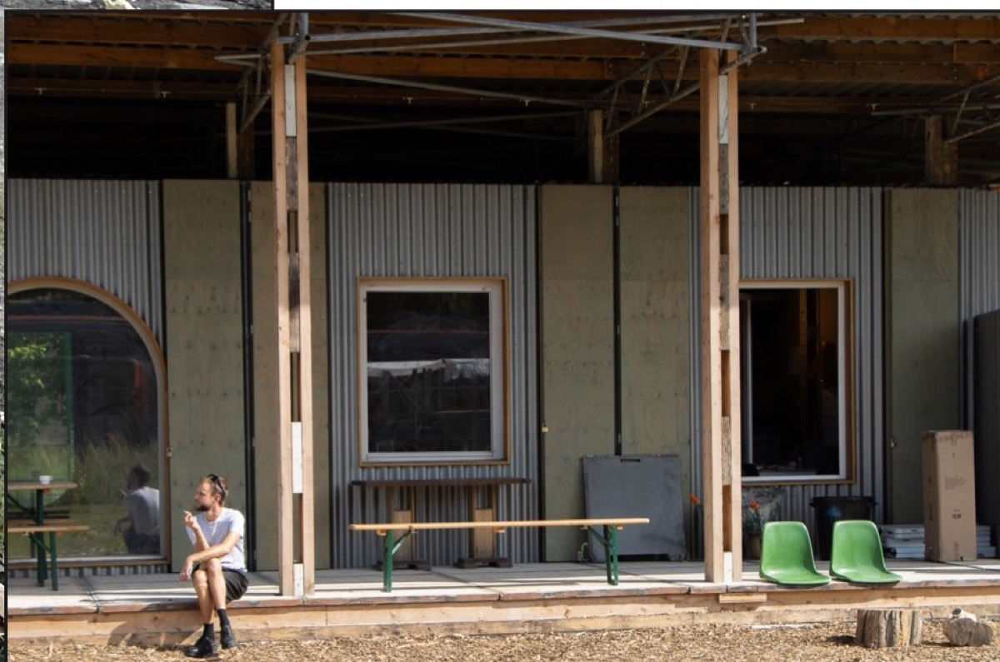
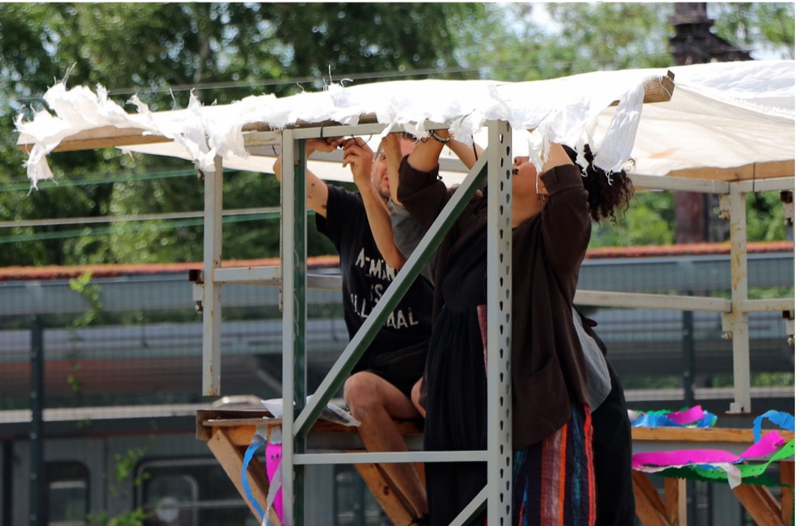
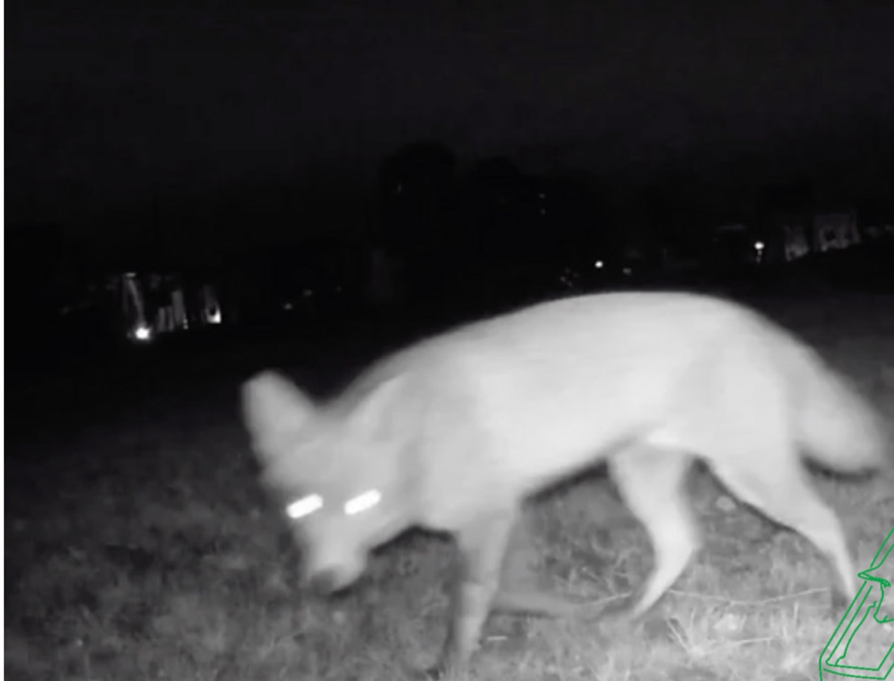
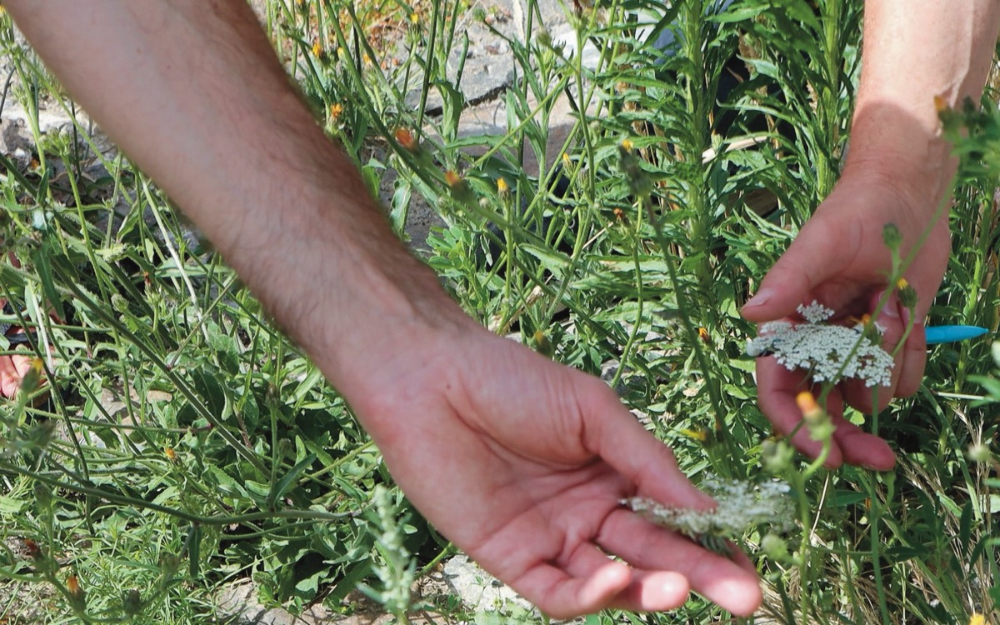
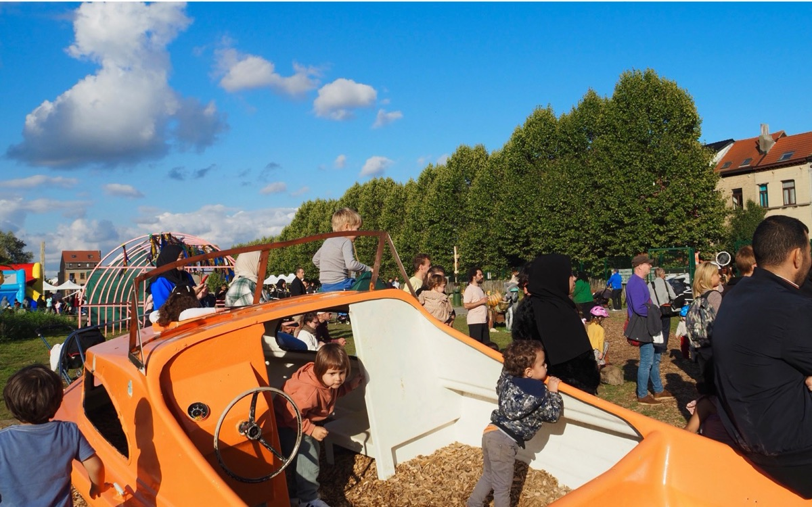
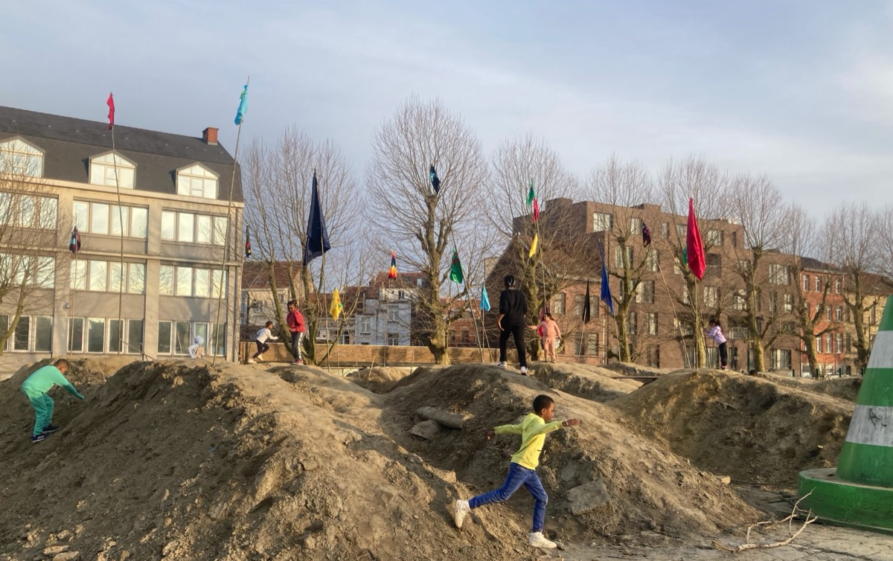
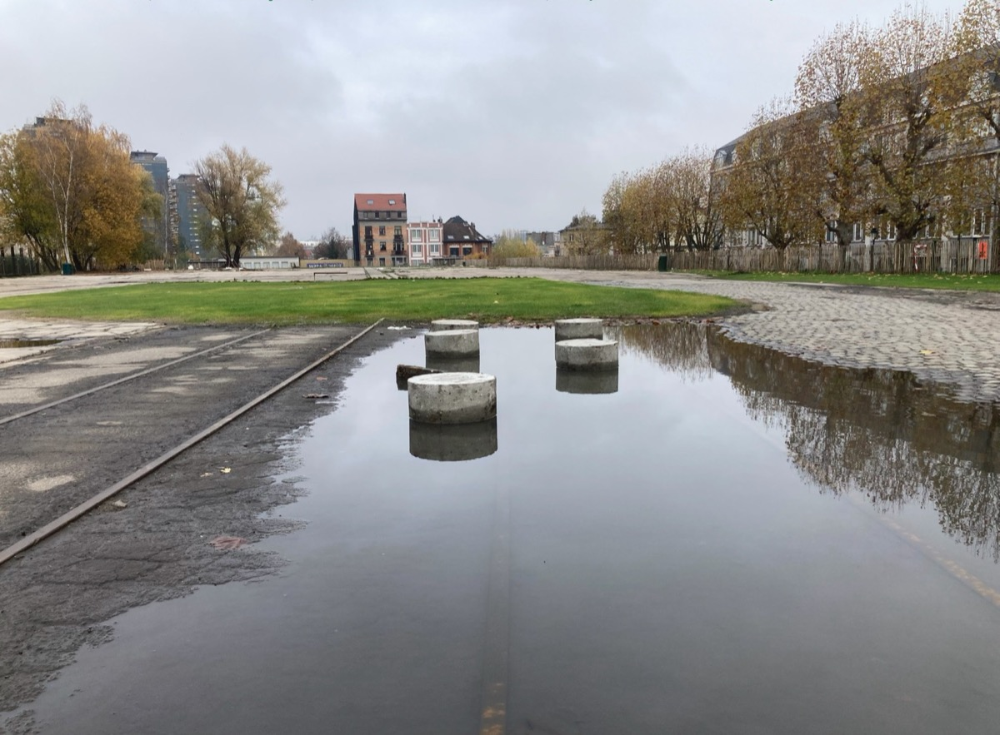
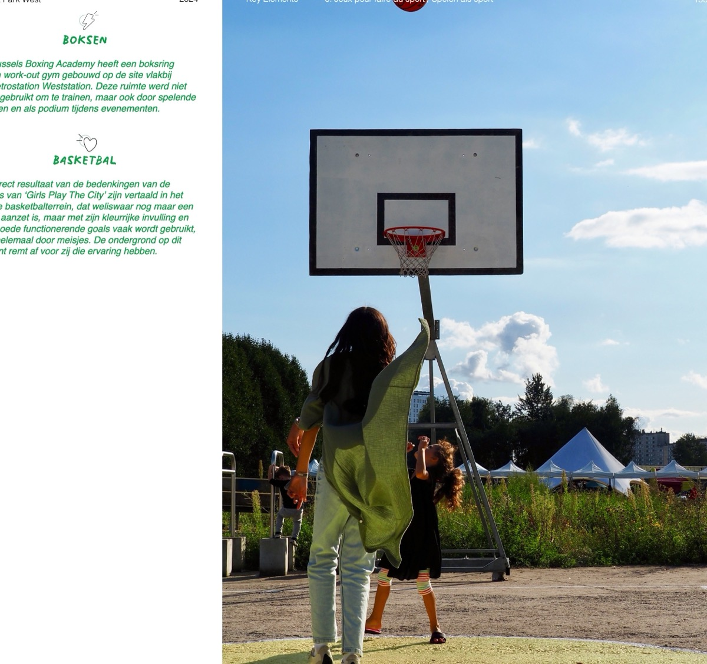
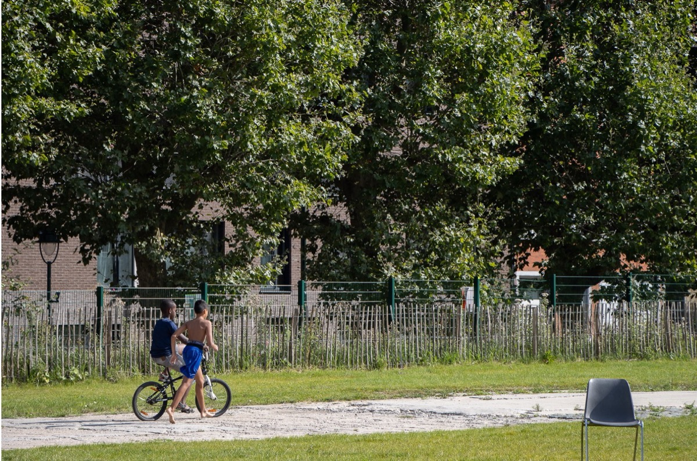
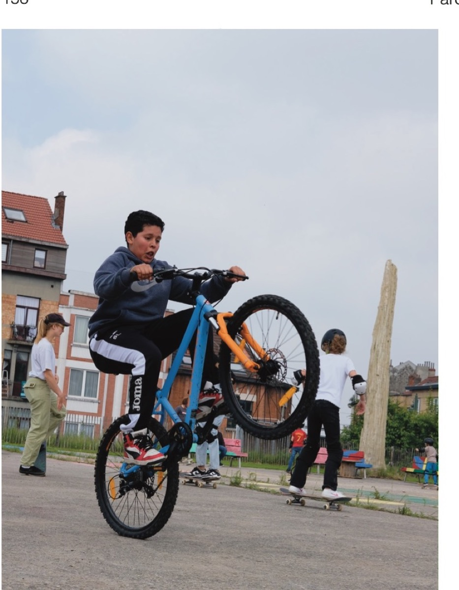

Livret 2024 · page 102
Le pavillon existant
Le livret décrit le pavillon comme un espace commun, avec kitchenette, eau et toilettes accessibles. Il est présenté comme un lieu d’accueil et de rencontre.
Lire les pages 102–103 du PDF ↗Plans de synthèse
Pages 1 + 2 · plan original assemblé
Survolez ou sélectionnez un repère. Les photos et textes viennent du livret Parc Ouest / Park West 2024 : ils documentent des usages et propositions, pas nécessairement les équipements prévus sur ce plan.

Livret 2024 · page 102
Le livret décrit le pavillon comme un espace commun, avec kitchenette, eau et toilettes accessibles. Il est présenté comme un lieu d’accueil et de rencontre.
Lire les pages 102–103 du PDF ↗
Livret 2024 · page 114
Le livret décrit des assises variées, des bancs construits ou récupérés aux tables de pique-nique, et explique l’intérêt de lieux ombragés et abrités.
Lire les pages 114–115 du PDF ↗
Livret 2024 · page 124
Le livret propose de protéger des îlots naturels dans le parc pour favoriser la faune et la flore, et permettre aux visiteur·euse·s de les observer.
Lire les pages 124–125 du PDF ↗
Livret 2024 · page 122
Un atelier mené avec Cinéma Nova en 2023 a identifié et répertorié les plantes présentes sur le site. La photo montre cette démarche d’observation.
Lire les pages 122–123 du PDF ↗
Livret 2024 · page 138
Le livret raconte des jeux de construction libre et des éléments ludiques fabriqués à partir d’objets réemployés, dont un bateau devenu jeu apprécié des enfants.
Lire les pages 138–139 du PDF ↗
Livret 2024 · page 140
Le livret raconte la création de collines avec de la terre venue du parc Duden. Les enfants s’en sont servis pour courir, planter des drapeaux et creuser des tunnels.
Lire les pages 140–141 du PDF ↗
Livret 2024 · page 146
Le livret décrit les flaques qui se forment sur les surfaces pavées après la pluie, et les éléments qui permettent aux enfants de sauter d’un îlot à l’autre.
Lire les pages 146–147 du PDF ↗
Livret 2024 · page 152
Le livret documente un terrain de basket utilisé par les visiteur·euse·s et issu d’échanges avec Girls Play the City. Cette photo illustre l’usage décrit.
Lire les pages 152–153 du PDF ↗
Livret 2024 · page 156
Le livret raconte que les enfants et les adolescent·e·s peuvent utiliser gratuitement des vélos dans le parc, et évoque la piste cyclable dans le quartier.
Lire les pages 156–157 du PDF ↗
Livret 2024 · page 158
Le livret rapporte les échanges avec des collectifs de skate, de patins à roulettes et de vélo autour des usages possibles d’une surface bétonnée.
Lire les pages 158–159 du PDF ↗